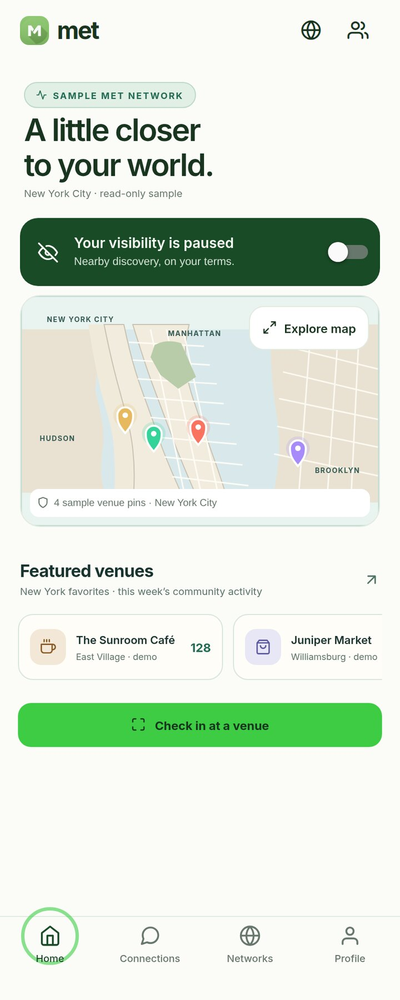
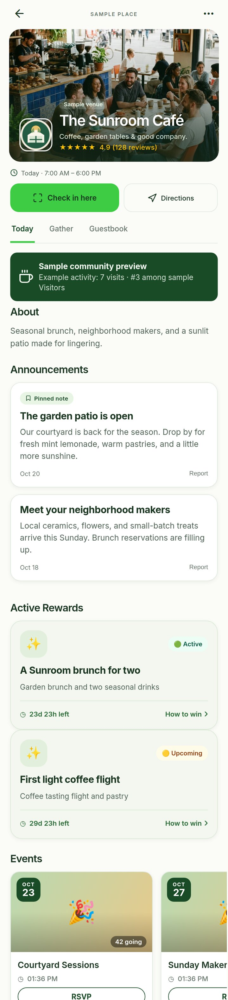
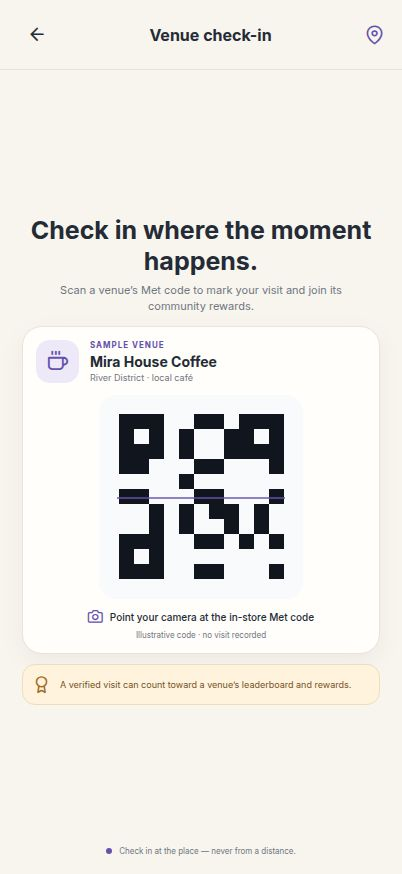
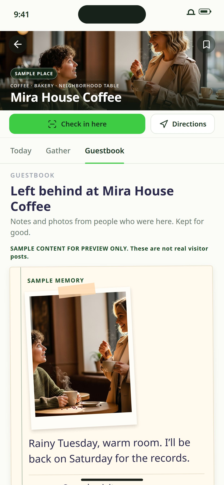
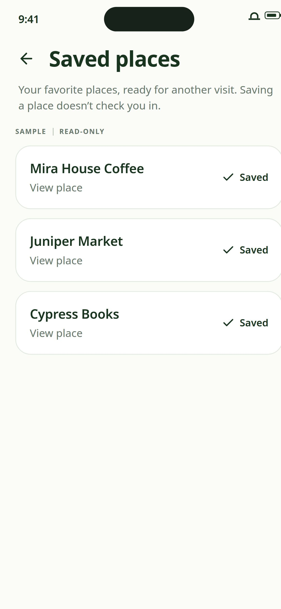
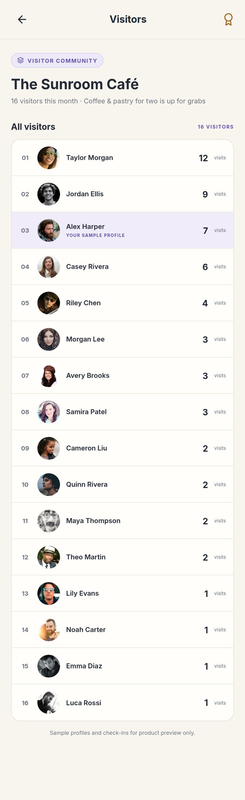
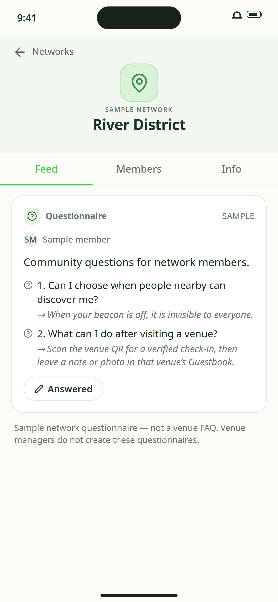

Discover
01 · Find nearby
A starting point for the neighborhood.
The home screen introduces nearby discovery and featured places. Guests control whether their visibility is on.
A closer look at Met
Met gives people a way to find nearby places, show up in person, and keep the ones they’d like to visit again. Here’s what that experience looks like from a guest’s side.

Made for the familiar places that make a neighborhood feel like yours.
Guests can discover venues, check in on-site with a venue’s Met code, save places for later, and leave notes or photos in a venue guestbook.
The guest journey
A few screens show how local discovery can become a real visit—and a reason to come back.
The home screen introduces nearby discovery and featured places. Guests control whether their visibility is on.

Guests can explore a venue’s page, see announcements, active rewards, upcoming events, and visitor activity, then choose directions or an on-site check-in.

Guests scan a venue’s Met code on-site for a verified visit. This QR screen is illustrative only and records no visit.

After a visit, guests can leave a note or photo in the venue’s Guestbook—a small record of being there.

Keep for later
Guests can save venues that catch their eye and find them again when they’re deciding where to go next.
A neighborhood in motion
Venue pages can show community activity, and a leaderboard presents monthly visitor standings and venue rewards.
Met also includes network spaces where members can share community questions and answers.


Take a look around